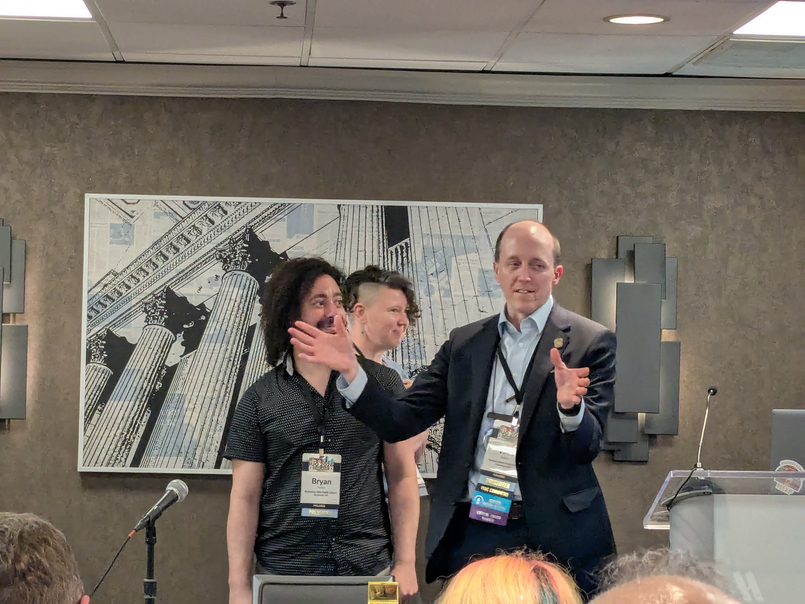
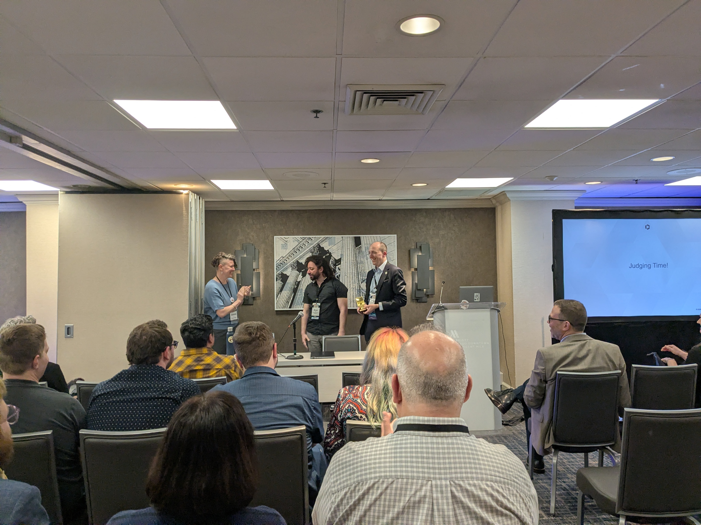

Monday, April 13 · 4:00–5:00 PM · Monday, April 13
Speakers: Gabrielle Gosselin, Mike Dicus
Gabrielle Gosselin and Mike Dicus
Six teams presented projects built during the IUG Hackathon pre-conference. All projects solve real operational problems for libraries using Polaris, Sierra, or standard protocols like SIP2.
By Wes and Bryan. SIP2-based offline checkout system built on PocketBase. Details below ↓


Rochester Hills Public Library · GitHub (MIT)
Adds interactive floor maps to the Vega Discover catalog. Patrons search, find an item, and see exactly where it sits on the shelf. Search → Find → Go Get It.
<div style="margin-top: 0.75rem; padding-top: 0.75rem; border-top: 1px solid #eee;">
<p><strong>Three components:</strong></p>
<ul style="padding-left: 1.25rem; margin-top: 0.25rem;">
<li><strong>Vega Widget</strong> — vanilla JS injected via Custom Header Code. Uses MutationObserver to detect availability rows, injects a "View Shelf Location" button that opens an interactive map modal with zoom, pan, and pinch-to-zoom. Multi-branch support with tabs.</li>
<li><strong>Rectangle Editor</strong> — Flask web app for staff. Draw shelf zones on floor plan images, map them to call number ranges and collections via PAPI dropdowns, and one-click publish to production.</li>
<li><strong>Standalone Map App</strong> — mobile-first search + map at <code>map.rhpl.org</code>. Supports kiosk mode for Chrome OS devices.</li>
</ul>
</div>
<div style="margin-top: 0.75rem; padding-top: 0.75rem; border-top: 1px solid #eee;">
<p><strong>Tech:</strong> Vanilla JS (zero dependencies, no build step), Python/Flask, Polaris PAPI (HMAC-SHA1), Google Workspace OAuth</p>
<p><strong>Key design choice:</strong> Zero framework dependencies so any library can deploy regardless of technical capacity. Self-host mandate — each library hosts its own copy. Data/code separation — staff update shelf mappings without touching JavaScript.</p>
</div>
<div style="margin-top: 0.75rem; padding-top: 0.75rem; border-top: 1px solid #eee;">
<p><strong>Photos:</strong> <a href="https://photos.app.goo.gl/3y7FAS7CZtFhT6Ce7">Presentation slides</a></p>
</div>Andrew
Allows patrons to browse through a smaller, curated collection. Built on the Polaris PAPI.
Wes and Bryan
A better offline tool for library checkouts. When the network goes down, staff can still circulate items and reconcile later. Started as a complex idea and was narrowed down during the hackathon.
<div style="margin-top: 0.75rem; padding-top: 0.75rem; border-top: 1px solid #eee;">
<ul style="padding-left: 1.25rem;">
<li><strong>SIP2-based</strong> — uses the standard library self-checkout protocol, works with any ILS ("bring your own SIP2 server")</li>
<li><strong>Peer architecture</strong> — one device acts as the server, others connect to it</li>
<li><strong>Sync later</strong> — transactions sync back to the ILS when connectivity is restored, or export to CSV as a fallback</li>
<li><strong>Cross-platform</strong> — runs on Windows, Mac, Linux</li>
</ul>
</div>
<div style="margin-top: 0.75rem; padding-top: 0.75rem; border-top: 1px solid #eee;">
<p><strong>Tech:</strong> PocketBase (single-file backend — database, auth, and API in one binary), SIP2</p>
<p><strong>Built with:</strong> Claude Code and ChatGPT</p>
</div>
<div style="margin-top: 0.75rem; padding-top: 0.75rem; border-top: 1px solid #eee;">
<p><strong>Photos:</strong> <a href="https://photos.app.goo.gl/J2vWEtC8EnPq3xyi8">Presentation slides</a></p>
</div>Kalee Gulosh and Mike Parks
Parameterized SQL searches for library staff who don't write SQL. Pick a saved template, fill in a form, run the query. Built for consortium environments where member libraries share query templates with each other.
<div style="margin-top: 0.75rem; padding-top: 0.75rem; border-top: 1px solid #eee;">
<ul style="padding-left: 1.25rem;">
<li><strong>Template dashboard</strong> — browse, search, and run saved queries with one click</li>
<li><strong>Parameterized forms</strong> — dropdowns and text fields instead of raw SQL</li>
<li><strong>Consortium sharing</strong> — one library writes a useful query, the whole consortium benefits</li>
</ul>
</div>
<div style="margin-top: 0.75rem; padding-top: 0.75rem; border-top: 1px solid #eee;">
<p><strong>Tech:</strong> ASP.NET / C#, Polaris SQL</p>
</div>
<div style="margin-top: 0.75rem; padding-top: 0.75rem; border-top: 1px solid #eee;">
<p><strong>Photos:</strong> <a href="https://photos.app.goo.gl/EqrDv5uQrooEwNGy5">Presentation slides</a></p>
</div>Somalia Jamall — Jacksonville Public Library · GitHub
Patron-facing purchase suggestion tool that takes work off the collection development team's plate. A nightly script processes suggestions and emails patrons with updates.
<div style="margin-top: 0.75rem; padding-top: 0.75rem; border-top: 1px solid #eee;">
<ul style="padding-left: 1.25rem;">
<li><strong>Already in production</strong> — approximately 400 patrons have used it</li>
<li><strong>Nightly script-based</strong> — processes suggestions on a schedule and emails patrons</li>
<li><strong>Solves a real problem</strong> — reduces manual collection development workload</li>
</ul>
</div>
<div style="margin-top: 0.75rem; padding-top: 0.75rem; border-top: 1px solid #eee;">
<p><strong>Tech:</strong> PHP, JavaScript, Python</p>
</div>Victor Zuniga
Bulk record editing via the Sierra API's Create Lists and Review Files endpoints. Edit multiple variable-length and fixed-length fields at once — no more record-by-record work in the Sierra client.
<div style="margin-top: 0.75rem; padding-top: 0.75rem; border-top: 1px solid #eee;">
<ul style="padding-left: 1.25rem;">
<li><strong>Patron records</strong> — demo showed a "Patron Review Files" interface with Name, Address, Phone, Barcode, Email, and Actions columns</li>
<li><strong>Create Lists + Review Files</strong> — uses Sierra API to build lists and then batch-edit through the review file</li>
<li><strong>Next step:</strong> incorporate permissions</li>
</ul>
</div>
<div style="margin-top: 0.75rem; padding-top: 0.75rem; border-top: 1px solid #eee;">
<p><strong>Photos:</strong> <a href="https://photos.app.goo.gl/74bUD5Xceta1funz9">Presentation slides</a></p>
</div>